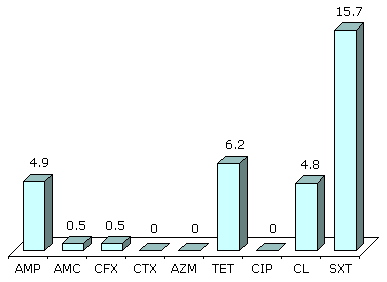

Antimicrobial Resistance :: Antimicrobial resistance in Russia : Community-acquired pathogens
Antimicrobial Resistance in Russia
Community-acquired pathogens
Streptococcus pneumoniae
The appearance and spread of penicillin-resistant pneumococci was noted in the last decade, in addition the strains resistant to macrolides, chloramphenicol and tetracycline were registered in several countries. In some regions resistance to macrolides prevailed over penicillin resistance. About 7.5% nasopharyngeal pneumococci isolated from healthy children in day-care centres in Moscow, Smolensk and Yartsevo had intermediate resistance to penicillin (MIC 0,12-1 mg/l). At the same time, no strains with high level resistance (MIC > 2 mg/l) were found. All penicillin intermediate isolates remained susceptible to amoxicillin/clavulanate. Resistance to macrolides made up 4.6%. The highest rate of resistance (56.8%) was due to co-trimoxazole.
According to the data from multicenter study «PeGAS-1», the number of strains with intermediate resistance to penicillin was 7% and less than 2% of strains showed up MIC > 2 mg/l. All intermediate strains retained susceptible to cephalosporins. The resistance rate to erythromycin was 6.2%.
At the moment the most important problems are resistance of S.pneumoniae to tetracycline (64.9%) and co-trimoxazole (62.2%).
The multicenter survey on S.pneumoniae strains antibiotic susceptibility performed by the Department of antibiotic resistance monitoring of the Ministry of Health and the Institute of Antimicrobial Chemotherapy (Smolensk) in different regions of Russia revealed significant regional variations of resistance rates (see Table 1). Pneumococcal strains with reduced susceptibility to penicillin were encountered rarely with the exception of the Siberian centres, were not only intermediate strains were found, but the isolates with 4-8 mg/L either.
Macrolide resistance was mainly caused by efflux or by target modification (ribosome methylation). However isolates with new resistance mechanisms (mutations in 23S rRNA and ribosomal L4 proteins) were found for the first time.
Table 1. Resistance (%) of S.pneumoniae clinical strains in various regions of Russia (2000-2001).
| Region (N) | PEN | TEL | EM | AZM | CLR | CD | LVX | QDA |
|---|
| Central (75) | 5.3 | 0 | 4 | 4 | 4 | 1.3 | 0 | 0 |
| North-West (323) | 2.5 | 0 | 1.9 | 1.9 | 1.9 | 0.6 | 0 | 0 |
| South (10) | 0 | 0 | 0 | 0 | 0 | 0 | 0 | 0 |
| Ural (8) | 0 | 0 | 1.3 | 1.3 | 1.3 | 1.3 | 0 | 0 |
| Siberia (52) | 13.5 | 0 | 3.8 | 3.8 | 3.8 | 1.9 | 0 | 0 |
| All (468) | 4.1 | 0 | 2.6 | 2.6 | 2.6 | 1.1 | 0 | 0 |
Abbreviations:
PEN - penicillin; TEL - telithromycine; EM - erythromycin; AZM - azithromycin; CLR - klarithromycin; CD - clindamycin; LVX - levofloxacin; QDA - quinupristin/dalfopristin.
Retrospective study of S.pneumoniae strains isolated from patients hospitalized in several Moscow clinics in 1998-1999 and 2000-2001 demonstrated a certain decrease of resistance level to penicillin and in a less extent to macrolides (see Table 2).
Table 2. Resistance (%) of S.pneumoniae isolates from Moscow hospitals in 1998-2001.
| Time period | EM | CLR | AZM | SPM | CD | PEN | CL | TET | SXT |
|---|
| 1998-1999 | 12.1 | ND | 14.3 | 14.8 | 9.5 | 23.7 | 12.6 | 42.6 | 35.6 |
| 2000-2001 | 8.4 | 6.6 | 7.9 | 7.5 | 1.8 | 10.0 | 35.8 | 22 | ND |
Abbreviations:
ND - no data; EM - erythromycin; CLR - klarithromycin; AZM - azithromycin; SPM - spiramycin; CD - clindamycin; PEN - penicillin; CL - chloramphenicol; TET - tetracycline; SXT - co-trimoxazole.
|
Figure 1. Resistance (%) of S.pneumoniae (CARTI, 2001)
* Intermediate strains.
Abbreviations:
EM - erythromycin; CLR - klarithromycin; AZM - azithromycin;
MDK - midecamycin; SPM - spiramycin; CD - clindamycin;
QDA - quinupristin/dalfopristin.
|
Streptococcus pyogenes
β-haemolythic group A streptococci possess universe susceptibility to β-lactams. Issue of the day is the macrolide resistance that exceeds 30% in some countries.
First multicenter survey of S.pyogenes resistance in Russia was performed as a part of «PEGAS-1» study, its results are displayed in Figure 2.
|
Figure 2. Resistance (%) of S.pyogenes (PEGAS-1, 2000)
Abbreviations:
PEN - penicillin; EM - erythromycin; AZM - azithromycin;
CLR - klarithromycin; CD - clindamycin; TET - tetracycline;
LVX - levofloxacin.
|
Multicenter study of clinical S.pyogenes isolates elucidated the rate of macrolide resistance in different regions of Russia (see Table 3). The percent of resistance to erythromycin varied and reached 11.4%, at the same time no strains resistant to telithromycin, the representative of new ketolide group, were found. Almost 90% of resistance were caused by ribosome methylation, in the rest cases it was associated with efflux.
Table 3. Resistance (%) of clinical strains of S.pyogenes, 2000-2001.
| Region (N) | PEN | TEL | EM | AZM | CLR | CD | LVX | QDA |
|---|
| Central (45) | 0 | 0 | 8.9 | 8.9 | 8.9 | 0 | 0 | 0 |
| North-East (498) | 0 | 0 | 11.4 | 11.4 | 11.4 | 0.4 | 0 | 0 |
| South (10) | 0 | 0 | 0 | 0 | 0 | 0 | 0 | 0 |
| Ural (31) | 0 | 0 | 3.2 | 3.2 | 3.2 | 6.5 | 0 | 0 |
| Siberia (16) | 0 | 0 | 25 | 25 | 25 | 0 | 0 | 0 |
| All (468) | 0 | 0 | 11 | 11 | 11 | 0.7 | 0 | 0 |
Abbreviations:
PEN - penicillin; TEL - telithromycine; EM - erythromycin; AZM - azithromycin; CLR - klarithromycin; CD - clindamycin; LVX - levofloxacin; QDA - quinupristin/dalfopristin.
Haemophilus influenzae
The main mechanism of H.influenzae resistance to aminopenicillins (ampicillin and amoxicillin) is the production of plasmid mediated β-lactamases.
According to the data obtained in Moscow, Yartsevo and Smolensk in 1998 the β-lactamases production did not present a severe problem (see Table 2). The resistance rate to ampicillin was 2.3%. H.influenzae resistance to co-trimoxazole was the most troublesome - 20.9% (see Figure 3).
|

Figure 3. Resistance (%) of H.influenzae clinical isolates (PeGAS-1, 2000)
Abbreviations:
AMP - ampicillin; AMC - amoxicillin/clavulanate; CFX - cefuroxime;
CTX - cefotaxime; AZM - azithromycin; TET - tetracycline;
CIP - ciprofloxacin; CL - chloramphenicol; SXT - co-trimoxazole.
|
Neisseria gonorrhoeae
Since the AST of gonococci is a complicated issue that demands special media, almost no reliable data concerning N.gonorrhoeae resistance are available in Russia.
The results of the pilot survey of the N.gonorrhoeae resistance performed in Moscow and Smolensk in 2000 are presented in Figure 4. There was found a remarkable portion of penicillin and tetracycline resistant gonococcal strains. Spectinomycin (23%) and ciprofloxacin (7%) resistance in Moscow is drawing our attention as well, where the last is caused by resistant but not by intermediate strains.
|
Figure 4. Resistance (%) of N.gonorrhoeae (2000)
Abbreviations:
PEN - penicillin; AMC - amoxicillin/clavulanate; SPT - spectinomycin;
TET - tetracycline; CIP - ciprofloxacin; CRO - ceftriaxone.
|
Esherichia coli
E.coli is the most frequent pathogen causing community-acquired urinary tract infections. Figure 5 represents the results of multicenter studies of gram-negative uropathogens resistance in out-patient women with acute and recurrent cystitis. These data were collected in Moscow, Smolensk and Novosibirsk in 1998 and in Moscow, St.-Petersburg, Smolensk, Rostov-na-Donu, Ekaterinburg, Novosibirsk in 2001. (see Figure 1).
|
Figure 5. Resistance (%) of uropathogenic E.coli (UTIAP, 1998-2001)
Abbreviations:
AMP - ampicillin; GM - gentamicin; SXT - co-trimoxazole; FT - nitrofurantoin;
NAL - nalidixic acid; CIP - ciprofloxacin; NOR - norfloxacin.
|
As concluded from the performed data the highest observed level of resistance was due to ampicillin and co-trimoxazole. The least resistance rate found was associated with fluoroquinolones. Comparing the results of 1998 and 2000 years surveys a slight increase of resistance to all the antimicrobial agents tested including fluoroquinolones (ciprofloxacin, norfloxacin) was noticed.
The first multicenter study of antibiotic resistance of community-acquired pathogens in children took place in 2000 («UTIAP»). The most frequently isolated organism was E.coli (see Table 4). It is worth to emphasize high resistance rate of E.coli strains to amoxicillin and co-trimoxazole. The minimal resistance rates were obtained for amoxicillin/clavulanate, fosfomycin, ciprofloxacin, nalidixic acid, gentamicin and nitrofurantoin.
The second most frequent pathogen found was K.pneumoniae (see Figure 6), most susceptible to ciprofloxacin, nalidixic acid and fosfomycin.
Table 4. Resistance (%) of E.coli, isolated from children with community-acquired UTIs (ARMID-2000).
| Antimicrobial |
Moscow,
N=85 |
St.-Petersburg,
N=36 |
Smolensk,
N=73 |
Kazan,
N=45 |
Orenburg,
N=26 |
Irkutsk,
N=37 |
Nizny Novgorod,
N=29 |
| Amoxicillin |
49.4 |
48.6 |
57.5 |
48.9 |
50 |
67.6 |
31 |
Amoxicillin/
clavulanate |
1.2 |
8.6 |
5.5 |
4.4 |
0 |
8.1 |
0 |
| Cefuroxime |
0 |
8.6 |
5.5 |
13.3 |
0 |
0 |
0 |
| Cefoperazone |
1.2 |
8.6 |
5.5 |
13.3 |
0 |
0 |
0 |
| Ceftriaxone |
0 |
2.9 |
2.7 |
11.1 |
0 |
0 |
0 |
| Cefotaxime |
0 |
2.9 |
2.7 |
8.9 |
0 |
0 |
0 |
| Ceftazidime |
0 |
0 |
0 |
0 |
0 |
0 |
0 |
| Ceftibuten |
0 |
0 |
0 |
0 |
0 |
0 |
0 |
| Cefepime |
0 |
2.9 |
1.4 |
2.2 |
0 |
0 |
0 |
| Imipenem |
0 |
0 |
0 |
0 |
0 |
0 |
0 |
| Nalidixic acid |
9.4 |
2.9 |
6.8 |
8.9 |
0 |
0 |
17.2 |
| Ciprofloxacin |
1.2 |
0 |
2.7 |
4.4 |
0 |
0 |
13.8 |
| Gentamicin |
4.7 |
5.7 |
11 |
15.5 |
3.8 |
13.5 |
0 |
| Netilmicin |
2.4 |
2.9 |
2.7 |
0 |
3.8 |
2.7 |
0 |
| Amikacin |
0 |
0 |
0 |
0 |
0 |
0 |
0 |
| Phosphomycin |
0 |
0 |
0 |
0 |
0 |
0 |
0 |
| Co-trimoxazole |
32.9 |
34.3 |
39.7 |
35.6 |
38.5 |
45.9 |
17.2 |
| Nitrofurantoin |
5.9 |
0 |
1.4 |
2.2 |
0 |
0 |
0 |
|
Figure 6. Resistance (%) of K.pneumoniae, isolated from children
with community-acquired UTIs (ARMID-2000)
Abbreviations:
AMX - amoxicillin; AMC - amoxicillin/clavulanate; CFX - cefuroxime;
NAL - nalidixic acid; CIP - ciprofloxacin; GM - gentamicin;
FM - fosfomycin; SXT - co-trimoxazole; FT - nitrofurantoin.
|
Shigella flexneri and Shigella sonnei
The results of multicentral study of Shigella spp. susceptibility performed in 1998-2000 are summarized in Table 5. The highest level of resistance was associated with S.flexneri strains. Almost all of them were resistant to aminopenicillins, co-trimoxazole (98%), chloramphenicol (98%) and tetracycline (98%) with minor variations between different centres. All Shigella spp. strains were susceptible to norfloxacin, ciprofloxacin, nalidixic acid (with the exception of Moscow, where 2.3% of isolates possessed resistance) and cefotaxime.
The data on Shigella spp. strains from Ekaterinburg presented in the Table 6 illustrate the less resistance rates of S.sonnei to penicillin and tetracycline compared with those of S.flexneri. The only exception was co-trimoxazole, which is a subject for higher resistance of S.sonnei. Particular interest was aroused by the appearance of ciprofloxacin resistant Shigella strains.
Table 5. Resistance (%) of Shigella spp. in various regions of Russia in 1998-2000.
| Antimicrobial |
S.flexneri |
S.sonnei |
Bryansk,
(N=14) |
Moscow,
(N=44) |
St.-Petersburg,
(N=29) |
Smolensk,
(N=89) |
Bryansk,
(N=64) |
St.-Petersburg,
(N=21) |
Smolensk,
(N=192) |
|
| Ampicillin |
100 |
95.5 |
96.6 |
95.5 |
10.9 |
38.1 |
30.7 |
| Ampicillin/sulbactam |
92.9 |
93.2 |
100 |
95.5 |
9.4 |
33.3 |
29.7 |
| Co-trimoxazole |
92.9 |
100 |
65.5 |
96.6 |
75 |
95.2 |
96.4 |
| Tetracycline |
92.9 |
100 |
100 |
97.8 |
62.5 |
66.7 |
92.2 |
| Chloramphenicol |
100 |
95.5 |
100 |
93.3 |
26.6 |
66.7 |
45.8 |
| Ciprofloxacin |
0 |
0 |
0 |
0 |
0 |
0 |
0 |
| Norfloxacin |
0 |
0 |
0 |
0 |
0 |
0 |
0 |
| Nalidixic acid |
0 |
2.3 |
0 |
0 |
0 |
0 |
0 |
| Cefotaxime |
0 |
0 |
0 |
0 |
0 |
0 |
0 |
Table 6. Resistance (%) of Shigella spp. (Ekaterinburg, 1999).
| |
AMP |
AMS |
CTX |
CRO |
TET |
CIP |
SXT |
| S.flexneri (n=53) |
98.1 |
98.2 |
0 |
20.4 |
91.8 |
3.8 |
73.6 |
| S.sonnei (n=41) |
7.3 |
7.3 |
2.4 |
0 |
66.7 |
4.9 |
97.6 |
Abbreviations:
AMP - ampicillin; AMS - ampicillin/sulbactam; CTX - cefotaxime; CRO - ceftriaxone; TET - tetracycline; CIP - ciprofloxacin; SXT - co-trimoxazole.
Salmonella spp.
As shown in Table 7, resistance of Salmonella spp. remained comparatively low with no strains resistant to cefotaxime, ciprofloxacin and co-trimoxazole. The highest resistance was observed to tetracycline (10.5%) and chloramphenicol (9.5%).
Table 7. Resistance (%) of Salmonella spp. (Smolensk, 1999).
| |
AMP |
AMS |
CTX |
NA |
CIP |
NOR |
CL |
TET |
SXT |
| S.enteritidis |
2.7 |
2.7 |
0 |
2.7 |
0 |
0 |
6.7 |
4 |
0 |
| Salmonella spp. |
6.3 |
6.3 |
0 |
3.2 |
0 |
0 |
9.5 |
10.5 |
0 |
Abbreviations:
AMP - ampicillin, AMS - ampicillin/sulbactam, CTX - cefotaxime, NA - nalidixic acid, CIP - ciprofloxacin, NOR - norfloxacin; CL - chloramphenicol, TET - tetracycline, SXT - co-trimoxazole.
However the presented data do not reflect the complete situation with antimicrobial resistance in Russia. In 1996 in St-Petersburg clinical and environmental strains of S.typhimurium resistant to cefotaxime were found. Molecular analysis of these strains as well as cefotaxime-resistant isolates from Belarus evaluated their clonal relatedness. Simultaneous production of CTX-M-type ESBL and SHV penicillinase determining their resistance was detected.
In 1999 in Ekaterinburg 16.7% Salmonella strains were found to be resistant to ampicillin and ampicillin/sulbactam, 13.8% to tetracycline and 6.1% to co-trimoxazole. All examined strains were susceptible to fluoroquinolones. Moreover, one clinical strain resistant to III generation cephalosporins remained susceptible to flouroquinolones and co-trimoxazole.
Mycobacterium tuberculosis
One of the leading reasons for tuberculosis therapy setbacks is increased partition of multi-drug resistant Mycobacterium tuberculosis, i.e. strains resistant at least to both isoniazide and rifampin.
In 1991-1994 in nine regions of North-Western Russia (Komi Republic, Pskov, Novgorod, Saint-Petersburg and Leningrad region, Karelia, Vologda, Arkhangel'sk, Murmansk) percent of M.tuberculosis primary resistant to one or more antimycobacterial drugs increased from 17% to 24%. The rate of secondary resistance did not change significantly and made up about 50%.
In Leningrad region in 1992-1994 primary resistance was 29.2%, frequency of multiresistant strains isolation reached 5.1% without significant variations during whole survey period. Secondary resistance of extra-pulmonary isolates in 1989-1994 was 45.6% as compared to 69.5% in respiratory isolates.
The spread of secondary multidrug resistant respiratory strains increased significantly and made up 33% as compared to 8.8% in extra-pulmonary isolates.
In Ivanovsk region primary multidrug resistance of 222 strain tested in 1998 was 9% and the part of multidrug-resistant M.tuberculosis isolated from patients treated with antimycobacterial drugs came up to 25.9%. According to the data of survey carried out in Tomsk (1995-1996) primary resistance in mycobacteria reached 27.7%, multidrug resistance - 3.4%. The studies performed in 1999 evaluated 6.5% of multidrug-resistant strains among the patients who were not given antimycotic agents and 26.7% among pre-treated group.
The survey has shown the remarkable tendency of multidrug-resistance enhancing among M.tuberculosis during the last years in all and especially regarding two basic drugs - isoniazid and rifampin.
Sources
- Kozlov R.S., Bogdanovitch T.M., Appelbaum P.C., Ednie L., Stratchounski L.S., Jacobs M.R., Bozdogan B. Antistreptococcal activity of telithromycin compared with seven other drugs in relation to macrolide resistance mechanisms in Russia. Antimicrob Agents Chemother 2002; 46:2963-8.
- S.V. Grudinina, S.V. Sidorenko, S.P. Rezvan, L.K. Kotosova, L.A. Krotova, V.I. Tishkov, V.V. Fedorchuk. Five year surveillance of Streptococcus pneumoniae resistance in Moscow, Russia. 43rd ICAAC Abstracts, American Society for Microbiology, September, 2003, p.132. Abstract: C2-945.
- L. Stratchounski, R. Kozlov, T. Bogdanovitch, O. Sivaja. Activity of macrolides, clindamycin and quinupristin/dalfopristin against clinical strains of S.pneumoniae isolated from children with community-acquired respiratory tract infections (CARTI). In: 6th International Conference on the Macrolides, Azalides, Streptogramins, Ketolides and Oxazolidinones; 2002 Jan 23-25, Bologna, Italy. p.91 Abstract: 3.11.
- Resistance of E.coli isolates from women with uncomplicated community-acquired urinary tract infections in Russia: result of multicenter study UTIAP // UTI symposium «Hot topics in urinary tract infections», January 24-26 2003, Budapest, Hungary.- Abs. A5. (Ahmetova L.I., Babkin P.A., Kogan M.I. e.a.).
- L. Stratchounski, A. Shevelev, N. Korovina, I. Edelstein, L. Kozlova, S. Zorkin, L. Katosova, A. Papajan, N. Marusina, A. Vjalkova, E. Agapova. Resistance of E.coli isolated from children with community-acquired urinary tract infections (CAUTIs) in Russia: Results of multicenter study «ARMID». In: 42nd Interscience Conference on Antimicrobial Agents and Chemotherapy; 2002 Sep 27-30, San Diego, CA, USA. P.253. Abstract: G-1469.
- A.S. Ivanov, O.I. Kretchikova, M.V. Sukhorukova, G. Axenova, M.Z. Shahmardanov, A.S. Kvetnaya, L.S. Stratchounski. Surveillance of antibioticoresistance of Shigella spp. in Russia. Proceeding of: «Infectious and parasitic diseases in modern comuniti. Clinico-laborotary supplement of infectology»" Moscow, 2003, p.86.
- L.I. Ahmetova, S.V. Rosanova. Susceptibility to antimicrobials of Shigella spp. and Salmonella spp. strains isolated in Ekaterinburg [newsletter]. Ural association for clinical microbiology and antimicrobial chemotherapy together with Microbiological laboratory, Center for laboratory diagnostics of child's and mother's diseases, 2000.
Available from (URL): http://www.antibiotic.ru/rus/all/letters/senseshg.shtml (Russian language).
The last modification date: 01 Mar 2004
|